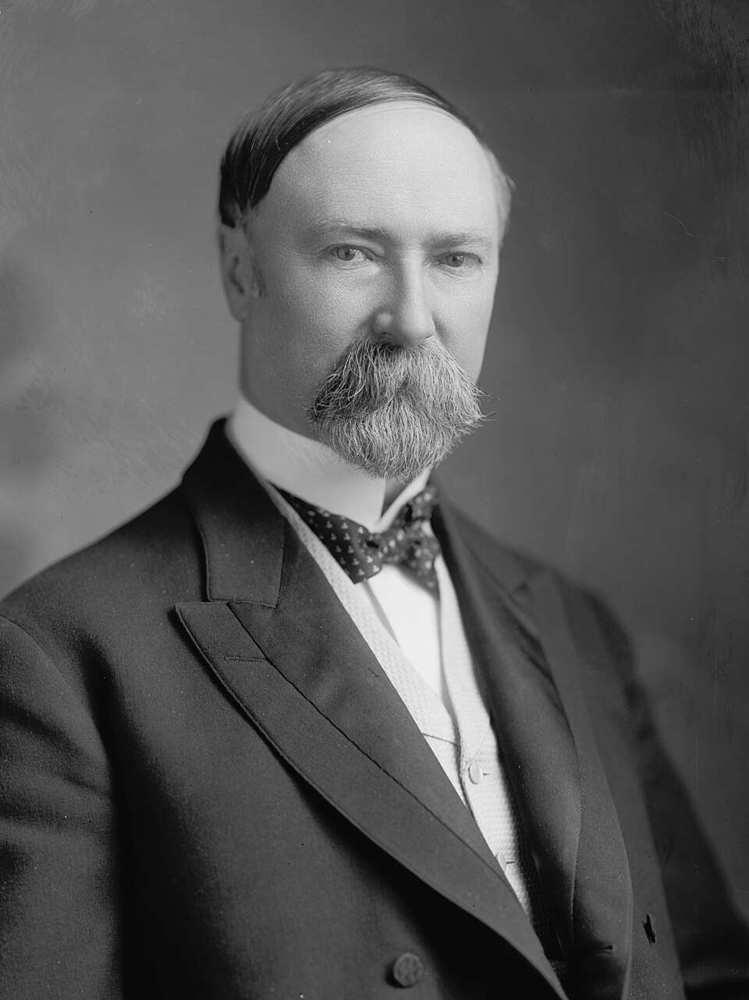
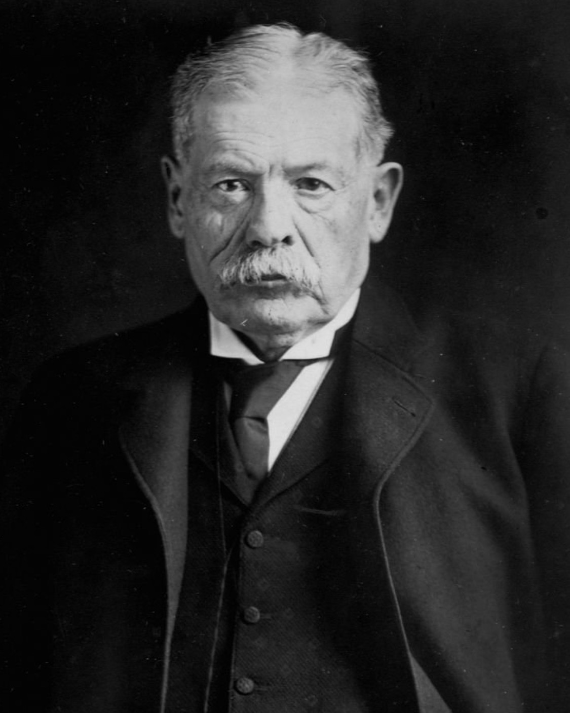
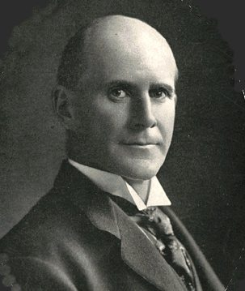
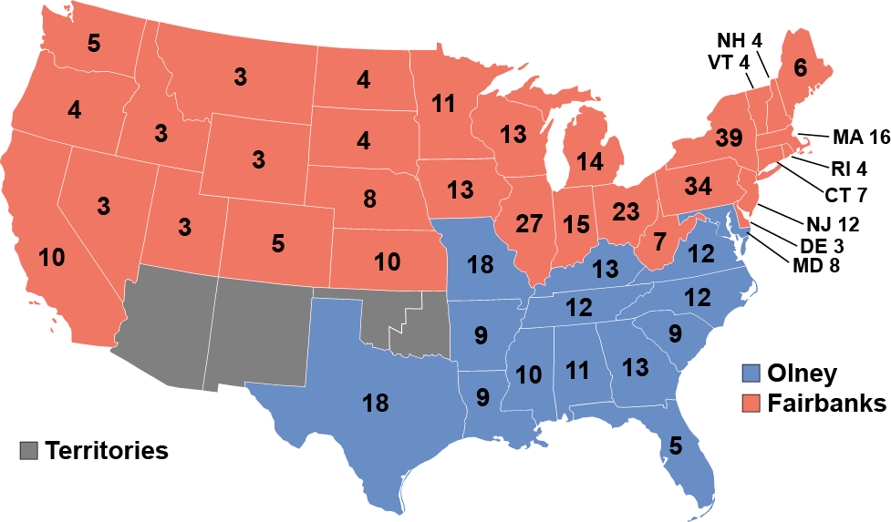

| 1904 United States Presidential Election | |||
|---|---|---|---|
| Date | November 8th, 1904 | ||
| Turnout | 64.03% -9.67pp | ||
|
 |
 |
 |
|
|
Charles Fairbanks Republican — 52.56% Electoral College: 317 |
Richard Olney Democratic — 38.67% Electoral College: 159 |
Eugene V. Debs Socialist — 5.46% Electoral College: 0 |
|
|

Presidential election results map. Rip-Roarin' Red denotes states won by Fairbanks/Hitt, Boring Blue denotes those won by Olney/Davis. Numbers indicate the number of electoral votes allotted to each state.
|
|||
| Winner | Charles Fairbanks | ||
| Next Election | 1908 Election | ||
Presidential elections were held in the United States on November 8th, 1904. Republican nominee Charles Fairbanks defeated the conservative Democratic nominee, Richard Olney.
With the support of incumbent president William McKinley, Fairbanks won the presidential nomination at the 1904 Republican National Convention on the first ballot, defeating a bid by progressive Vice President Theodore Roosevelt.
The conservative Bourbon Democrat allies of former president Grover Cleveland temporarily regained control of the Democratic Party from the followers of William Jennings Bryan, and the 1904 Democratic National Convention nominated Richard Olney, former Attorney General and Secretary of State in the Cleveland cabinet. Olney triumphed on the third ballot of the convention, defeating newspaper magnate William Randolph Hearst.
As there was little difference between the candidates' positions, the race was largely based on their personalities; the Democrats argued that a Fairbanks presidency would be another term for McKinley. The Republicans emphasized Olney's service in the extremely unpopular second Cleveland administration. Fairbanks easily defeated Olney, sweeping every US region except the South, while Olney lost multiple states won by Bryan in 1900, as well as his home state of Massachussets.
In the runup to the 1904 Republican National Convention, a significant grassroots campaign began to get Roosevelt nominated for President. The Vice President threw himself fully into campaigning on a progressive platform, criticizing the Northern Securities decision and calling for the adoption of a plank pressing for a constitutional amendment which would allow the government to properly regulate the economy.
McKinley would, as dictated by custom, not run for a third term, instead placing his support behind Indiana Senator Charles Warren Fairbanks. A man whose calm demeanor and ‘safe’ views made him popular in the Senate, his consistent defense of McKinley’s policies made him seem a natural successor. Besides the two frontrunners, there was a scattering of favorite son candidates: Thomas Carter of Montana, Joseph Foraker of Ohio, and Fredrick Funston, hero of the Philippine War. House Speaker Joseph Cannon was also floated as a possible name, but he would quickly quash any possibility of his nomination, preferring to stay in his position in the House.
Despite Roosevelt’s best efforts, the result was never in question. In the days before open primaries, the nomination would have been arranged by party bosses in a smoke-filled room, as it indeed was in this case. Fairbanks won handily on the first ballot, with 751 delegates to Roosevelt’s mere 224.
| Presidential Balloting | ||
| Candidate | 1st | Unanimous |
|---|---|---|
| Charles Fairbanks | 751 | 1000 |
| Theodore Roosevelt | 224 | 0 |
| Thomas Carter | 8 | 0 |
| Joseph Foraker | 7 | 0 |
| Frederick Funston | 4 | 0 |
With the presidential nomination settled, the delegates now moved onto selecting the Vice President. William Taft, a criminal lawyer and federal judge noted for his spotless reputation, was the preferred candidate of the progressives. But he was a bit too progressive for the conservative Fairbanks, who instead pushed for the convention to nominate Illinois Representative Robert R. Hitt. Like Taft, he leaned progressive, but more moderately so. He was less likely to openly clash with the President, and was in better physical health than the badly overweight Taft.
| Vice Presidential Balloting | ||
| Candidate | 1st | Unanimous |
|---|---|---|
| Robert Hitt | 847 | 1000 |
| William H. Taft | 66 | 0 |
| Franklin Murphy | 52 | 0 |
| 29 | 0 |
Since Byran’s second electoral defeat in 1900, the populist Democrats had lost significant ground, and Grover Cleveland’s Bourbon Democrats had regained control of the party. There was little question that a conservative would be nominated, but there was disagreement over whom in particular. Despite calls for his doing so, former President Cleveland refused to run, citing his age. New York Judge Alton Parker did as well, hoping instead for a Supreme Court appointment in the near future. The conservative bloc quickly coalesced around former Attorney General and Secretary of State, Richard Olney.
Though Bryan declined to run, he still held some sway, perhaps enough to extract concessions on the party platform. Many expected him to throw his support behind the up-and-coming newspaper magnate, William Randolph Hearst. Hearst had supported Bryan in 1896 and 1900, his organization being the only one on the east coast to do so. He had decent progressive credentials, using his empire of newspapers to support labor-related causes. His campaign was marred, however, by accusations of corruption and other such immoralities. Bryan himself had some warm words for Hearst, but declined to endorse his candidacy. Instead, he focused his efforts on defeating the inclusion of a gold standard plank in the platform. It was a slight which Hearst would not soon forget.
| Presidential Balloting | ||||
| Candidate | 1st | 2nd | 3rd | Unanimous |
|---|---|---|---|---|
| Richard Olney | 636 | 638 | 674 | 1000 |
| William R. Hearst | 288 | 288 | 288 | 0 |
| Francis Cockrell | 36 | 36 | 0 | 0 |
| Edward C. Wall | 26 | 26 | 26 | 0 |
| George Gray | 12 | 12 | 12 | 0 |
| George B. McClellan Jr. | 3 | 3 | 3 | 0 |
| Arthur P. Gorman | 2 | 0 | 0 | 0 |
Fairbanks campaigns on continuity, Olney uhhhhh. exists.
The results of the election surprised few. The strength of the economy was unimpaired, Fairbanks represented the continuation of a relatively popular president, and the Northern Securities decision had been blamed on the Supreme Court rather than the administration. The Senator from Indiana secured healthy majorities in both the popular vote and the electoral college.
Olney comfortably carried the Democrat’s traditional stronghold in the Solid South, yet little outside of it. Across the west, in states that turned out en masse for Bryan, the answer was a resounding: “meh.” It was apparent that his lack of appeal to Bryanite populists and northern reformists led to many progressives deciding that there was little difference between the two major candidates, and voting for third parties (if they even voted at all).
| Electoral Results | ||||
| Candidate | Party | Home State | Popular Vote | Electoral Vote |
|---|---|---|---|---|
| Charles Fairbanks | Republican | Indiana | 6,948,515 (52.55%) | 317 |
| Richard Olney | Democratic | Massachussets | 5,112,214 (38.66%) | 159 |
| Eugene V. Debs | Socialist | Indiana | 722,169 (5.46%) | 0 |
| Silas C. Swallow | Prohibition | Pennsylvania | 288,056 (2.18%) | 0 |
| Thomas E. Watson | Populist | Georgia | 113,600 (0.86%) | 0 |
| Charles Corregan | Socialist Labor | New York | 36,514 (0.28%) | 0 |
| Other | 1,229 (0.01%) | -- | ||
| Total | 13,222,297 | 476 | ||